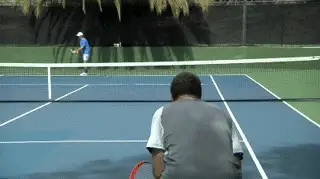
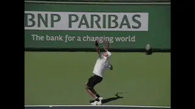
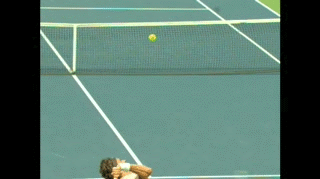
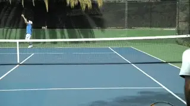
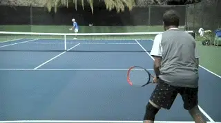
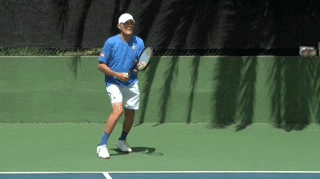
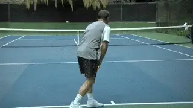
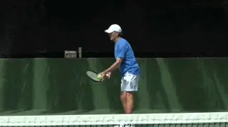
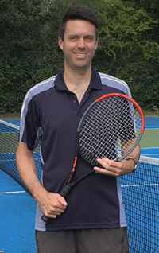

Increasing Your Chances of Winning Points on Serve¶
Nick Wheatley

How can you use your knowledge of your game and court patterns to make critical marginal gains in service points won?
Now you have comprehensively developed your understanding of your own game (Click Here), based on a good understanding of the game as a whole, it's time to get stuck into those marginal gains, and learn how to boost your chances a crucial few percent in all the main scenarios you will face during competitive matches.
The outcome of a point is not something you can ever control. Your chances of winning any single tennis point will always be less than 100%. When returning first serves, they will be lowest. They improve when you get to return second serves and improve again when you successfully make your first serve.
Let's say normally your chances of winning a point when you make a first serve in a particular match is 65%. The rest of this article and series will look at how you can boost those odds by a few percentage points in many different situations, and how those crucial marginal gains can stack up and make the difference between winning and losing.
First Serve In
When you make a first serve, especially if your first serve is a weapon, your chances of winning the point are the most favourable of all the start of point scenarios, but how can you make the most of this advantage?

If your serve at your level is dominant like John Isner, it makes winning first serve points easier—but few players have that weapon.
If you have a serve like John Isner, or a dominant serve at your level, the task is much easier. But we know that kind of dominance is rare. So how do you use your first serve regardless of level?
Where you aim that serve is the biggest factor, though as we will see, it's not only about targeting your opponent's weaker side. This seemingly obvious tactic can be a huge source of cheap points, or at least points that leave you in charge of the rally, but I'm continually amazed how often I see even quite experienced players failing to capitalise on this.
If you know your opponent in advance, you should have a good idea which is their weaker side. If not, then this information is something you will want to gain as early as you can in the match. Warm-ups can often be deceiving, so while they are useful, you must wait to see what happens when the match starts.
In the warm-up against someone I've never played before, I will look at their technique. Which side looks more natural and easy for the player to produce their shots? Does one side have any quirks that may cause errors when the player is under pressure?

Typically serving to the backhand is the percentage play.
You can gain clues as to which is the weaker side, but you must also test your theory once the match has begun, and form stronger opinions based on the outcome of their returns once the match is underway.
In the majority of cases, the backhand side will be weakest, so this should be in your mind while going through the process of gathering information.
You will also want to know what difference there is between your opponent's two sides. If one side is a lot stronger, then you will focus on their weaker side a lot more often. If the difference is marginal, then there won't be the need to be quite so predictable in where you aim your first serve.
But a very important point to mention here: if a tactic is working, it really doesn't matter how predictable you are with using it. Your opponent may know exactly where you will serve the ball, but if your chances to win the point are still higher by doing so, then what reason is there to change things up?
How about if your opponent doesn't seem to be weak on either side? There are 2 things to consider in this scenario. First, which side are they hurting you more with on returns? If one side is giving you more problems on your next shot than the other, then you have a good reason to target the side where the returns are coming back less threateningly.

If you are a left side player, the serve to the T can set up inside forehands.
The second thing to consider is how does your serving target affect the location of the return and what shot may be you able to play next?
Based on what we know about the game and the court dynamics, returners are least likely to attempt a down the line return on your first serve. Most likely, their return will be aimed cross court. It also may be aimed up the middle which reduces the potential for the server to get the opponent on the run with his next shot.
If you can anticipate the return, you can then tailor this to what shot you would like as your first shot after hitting a first serve. If the previous articles we gave you a series of tests to determine your favourite shots and top shot (Click Here).
Now you can bring this into play and set up the pattern that favours your strengths as a player off first serve. For example, let's say you are a right-handed player, and your strengths is the left side pattern, where you can control points with your inside out and inside in forehands.

In the ad court a wide serve is the most likely to create a preferred left side pattern, especially if you stand a little left of center.
Hitting a serve down the T on the deuce side, is likely to lead to this pattern as there is no natural angle for the return to go to your forehand side.
If it goes up the middle, or weakly to your backhand side, then you can hit your next shot as an inside forehand, and immediately have a favourable situation to develop the rally. If you serve out wide on the deuce side, there is much less chance the return will allow you to set up the left side pattern, because the returner is more likely to go crosscourt, rather than hit the lower percentage down the line.
What about the ad side? Let's use the left side pattern as our example again. In this case, a serve out wide is much more likely to create this left side pattern, since the returner is less likely to consider a down the line return off your first serve—especially if they have a weaker backhand side.
As a server armed with this knowledge, you can aim your serve out wide on the ad side, expecting that the ball will probably come back cross court or middle. As someone who wants to dominate the point with inside forehands, you can also adjust your serving position slightly to the left, and also be ready to move left after your serve, to increase the chance of your next shot being an inside forehand.

A body serve forces the returner to move and may force a weak return.
If you serve down the T from the ad side, you need to protect your forehand side a little more, as the returner's choices are not so obviously restricted. However, if you are looking to immediately get into the right side pattern, then the T serve will be your best option.
Finally, don't forget the body serve! If you have a powerful serve, aiming directly at the body not only increases the chance of making the serve, but will force your opponent to move out of the way of the ball to play their shot, which is not an easy task with limited time from a powerful serve. Returns often come back weak. It's also advisable to aim slightly to their weaker side on a body serve, so you reduce the risk of teeing up their stronger shot should you not be fully accurate.
Second Serve
If your opponent's returns on your second serve are stronger than against your first, then the initial priority is damage limitation from your opponent's return. The goal is to get yourself into a neutral rallying situation starting the point. But if your second serve is strong, and you're able to achieve good spin on the ball, your mindset may shift towards looking to take control of the point as you would do if you made your first serve.

If your opponent is hurting you off your second serve, one goal is to get the point started with a neutral rally.
If it's a damage limitation exercise, then there are a few things you can do. Top priority is a well-timed split step from your opponent's return. I've touched on the fact the service action often takes a fraction longer to recover balance from, and this can lead to picking up the ball from your opponents return slightly late, and also doing your split step slightly late. As soon as your service motion is complete, focus your attention on timing your split step well, and spotting which direction the return is heading as soon as it leaves your opponent's racket.
This is a skill that can be developed and used for all situations in a tennis rally, but is particularly beneficial when you've just hit a second serve. You will find that with a slightly higher level of focused concentration you can create a fraction more time for yourself, and this should be clearly noticeable to you. This extra time may well be the difference between getting a racket to the next ball or not, or perhaps being able to play the next shot on your terms as opposed to being rushed.
Your mindset will also be one of determination to defend well if needed and get yourself into the point. If you have a weak second serve, this mindset will allow you take a precious few extra points from this scenario.
Secondly, a conscious movement back after your serve may also help. You may not have the time for this, but if you can, try to push back and do your split step behind the baseline, to give you a little more time and room to track down your opponent's return.

Another option against strong returns on your second serve is to split step back.
Finally, it could also be worth ensuring you hit fewer second serves by taking a little power off your first serve, and getting more of them in. Weigh up the effectiveness of your best first serves and how often you make them, against the value of hitting far fewer second serves.
Be aware of your first serve percentage, and if possible ask someone to track this information for you. It does amaze me how many players settle for slamming a few amazing first serves at a very low percentage, and then just rolling in the second serve as if the number of second serves they hit has no consequence.
For those skilled enough to have a more potent second serve, then you should be adopting more of a similar mindset to that of when your first serve goes in. Think about placement based on your opponent's weaker side, and also what ball might come back depending on where you place your serve, and look to get on the front foot with your next shot in the rally.
Serve and Volley
Finally, don't forget the serve and volley option for first and second serves. This play is far from dead. It can be extremely effective, especially when used sparingly as a surprise tactic.

Don't be afraid to mix in some serve and volley as a surprise tactic on either first or second serve.
If you're brave enough, it can be a great way to save a break point, or to finally win a game point in one of those never-ending deuce games!
The ability to hit a good kick serve can make this play even more worthwhile. The spin will slow the ball down, which gives you a little more opportunity to get closer to the net for your first volley, whilst the kick effect will make it difficult for your opponent to keep the ball low on their return, which is just what the incoming volleyer doesn't like.
Serve placement should be primarily based on your opponent's weaker returning side, as the pressure of you coming in will increase the chance they don't connect well with the ball. Whether using this tactic on first or second serve, placement should be carefully considered.
Wide serves open up space beautifully for your first volley, whilst hitting down the T limits the angles available to your opponent and offers space on both sides as well as the wrong-footing option. Don't forget that body serve, which can easily cause the returner to send the ball up on their return, giving you perhaps an easy high volley or a smash.

Nick Wheatley is an LTA Performance Coach and head coach at Hawker Tennis in south west London. His junior teams, the Hawker Jets, have won 44 competitions since formation, and over the last 2 years alone, his junior players have won 19 singles tournaments between them at county level.
He has been ranked in the top 75 nationally in 35 and over singles and in the top 5 in Surrey county. Nick has done video analysis for numerous players at all levels, including former British Top 10 player Marcus Willis.
His unique teaching video series, covering every aspect of the game, is available on his website www.nickwtennis.com
You can also contact Nick directly via the homepage of his website.